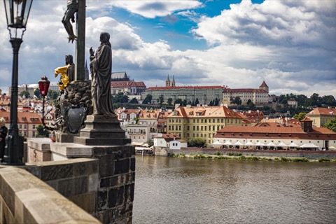

Entdecken Sie
Prag, äusserst interessant.
Private Stadtführungen mit Zuzana Manová — vierzig Jahre Geschichten, für ein Publikum von einem.
Jede Tour beginnt
mit Ihrer Neugier.
Maßgeschneiderte Routen für anspruchsvolle Reisende — Authentizität, Geschichte und der lokale Puls der Stadt.

Prag, erzählt mit Leidenschaft.
Ich bin Ing. Zuzana Manová – deutschsprachige Prag-Expertin und zertifizierte Stadtführerin. Seit 1986 führe ich Besucher durch Prag. Vierzig Jahre, in denen ich zugesehen habe, wie sich diese Stadt verändert, ihre Geheimnisse bewahrt und mich überrascht. Die meisten Wochen lerne ich noch etwas Neues.
Als Spezialistin für Prager Geschichte und Kultur besitze ich die offizielle tschechische Stadtführer-Zertifizierung und eine zusätzliche Akkreditierung des Jüdischen Museums in Prag als Expertin für das Jüdische Viertel. Im Laufe der Jahre bin ich mit Schulklassen, Familien, Vorständen, Filmteams und dem einen oder anderen Diplomaten durch diese Straßen gegangen. Die deutschsprachige Führung, die ich einem Rentnerpaar aus München gebe, ist nicht dieselbe wie die für eine Gruppe Architekturstudenten aus London. Genau darum geht es.
Sagen Sie mir, was Sie interessiert, und ich baue den Rundgang darum. Wenn Sie es noch nicht wissen, umso besser. Ich habe vierzig Jahre Meinungen darüber, wohin ich Sie mitnehmen sollte.
Augenblicke unterwegs

Worte meiner Gäste
„Zuzanas persönliche Geschichte mit der Stadt macht diese Führung zu etwas völlig Einzigartigem. Absolut unvergesslich.“
„Ein absolutes Highlight unserer Europareise. Ihr Wissen über Architektur und Geschichte ist unübertroffen.“
„Perfekt für unsere Familie. Sie hat die Kinder mit lokalen Legenden fasziniert.“
(Skript eines Drittanbieters)
Lesen Sie verifizierte Bewertungen und sehen Sie Zuzanas vollständiges Guide-Profil auf TourHQ.
Profil auf TourHQ öffnenopen_in_new
Bereit, Prag zu entdecken?
Begrenzte Verfügbarkeit für private Buchungen. Kontaktieren Sie Zuzana noch heute, um Ihre individuelle Reiseroute zu planen.